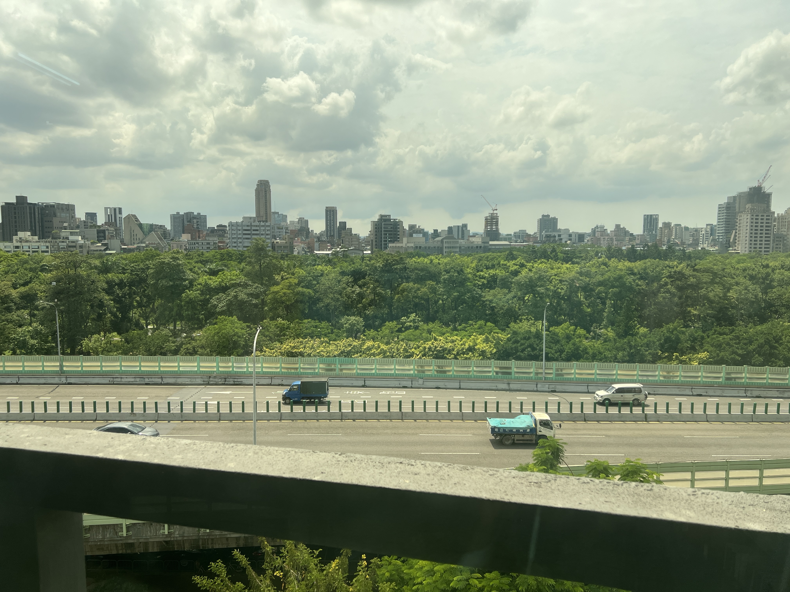
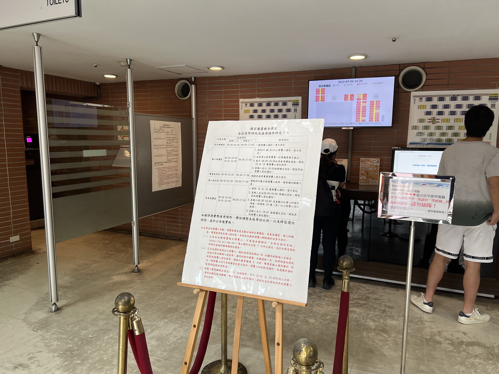
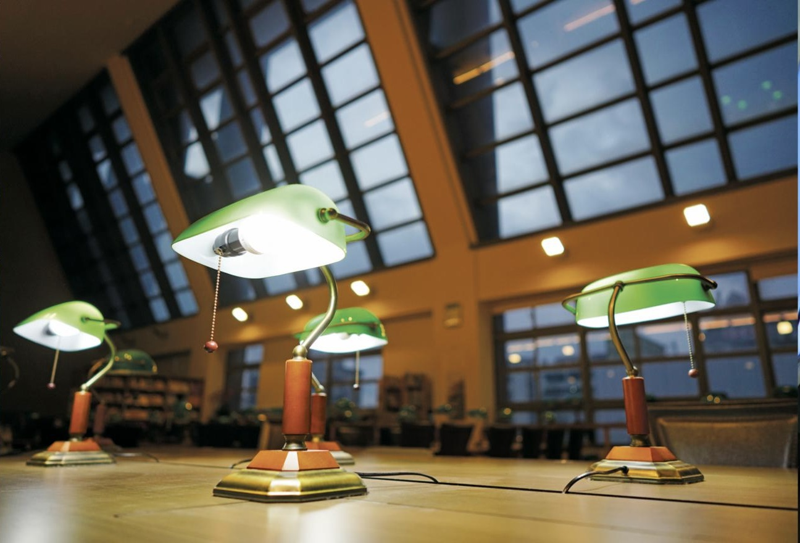
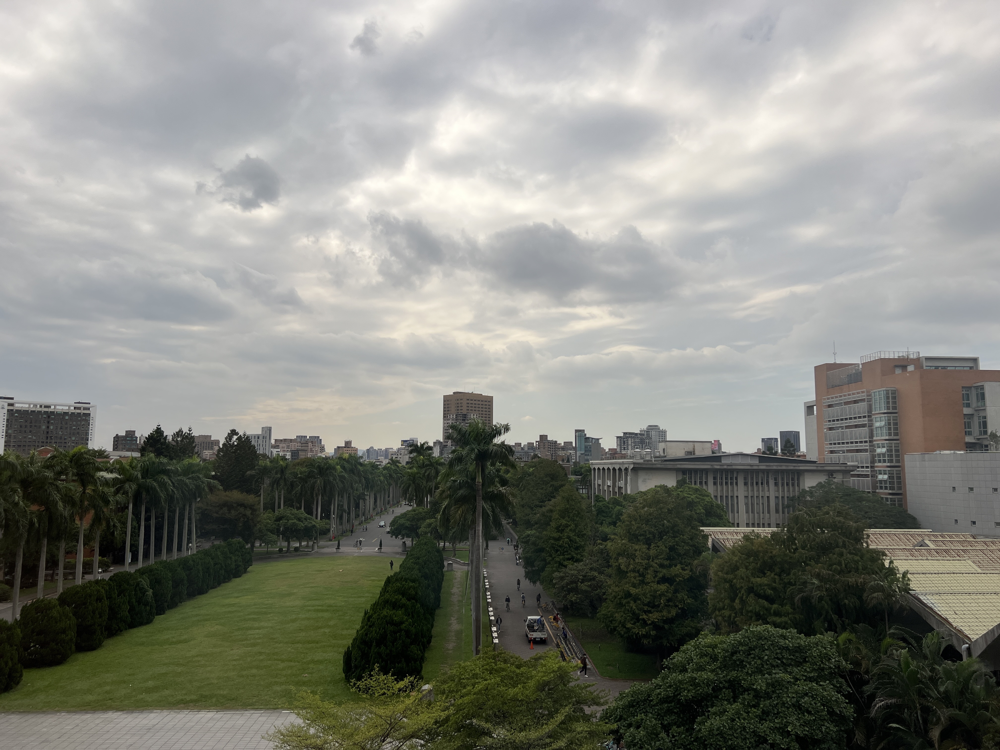

我去自習室的時光與我的高中、大學階段幾乎完全重疊，不同的圖書館各自代表了我念書的不同時期。
臺北市立圖書館總館
臺北市立圖書館總館，簡稱總圖。我知道對很多臺大人來說「總圖」指得是椰林大道盡頭的那座圖書館；但是對台北人（至少中正區、大安區）來說「總圖」就是指「臺北市立圖書館總館」，至少在考上臺大以前我是這麼稱呼他的。市圖總館面對建國高架，過個馬路就是大安森林公園，環境優美、附近大多是民宅；晚上來自習的國中生、高中生非常多。
我在有記憶以來就會去臺北市立圖書館總館閱讀。小時候幾乎都是在地下室的兒童閱讀區看書，長大點會去四、五樓看小說，高中的時候則是去四、五、六樓的自習區念書。總圖離延平中學非常近，下課時我們會一群人沿著建國南路走路到圖書館念書；沿圖經過幾間手搖飲店、小吃店、轟動一時號稱房價超越仁愛帝寶的信義聯勤、非常具有年代氣息的大安國宅。下雨的日子也可以走在建國高架下的停車場，橫穿整個停車場到圖書館幾乎一點雨都淋不到。
省下的交通時間我可不會拿來念書。當時總圖的自習室劃位系統還是採用紙本取票的方式，因此基本上沒有離座時間限制；加上總圖附近吃飯的選擇實在是太多了，常常搞到晚上七點多才坐定開始念書。我最常吃的就是巷子對面的八方雲集鍋貼，幾乎十次去念書會吃八次；剩下的一次會去吃刀削麵、一次吃 7-11。其中有一段時間八方雲集在重新裝修，逼得我只能吃 7-11 果腹。

在總圖的這段時間我幾乎都在念高中英文、數學，尤其是數學。當時吃飽喝足後就會拿出那一本黃藍相間的「互動式數學講義」；這本講義我都用鉛筆寫，因為時常會發現寫錯了要修正。當時我們一群人會在遇到問題的時候互相討論，但時常一討論一題就花半個小時，整體而言我在總圖念書的效率並不高。
除了在念書時的效率不高我還常常念半個小時就跑去休息。總圖的樓梯間有大片的落地窗，可以看見建國高架上的車流、夜晚的大安森林公園在書本面前也顯得格外迷人。好幾次我從進圖書館到回家止寫了不到一頁數學講義。

最後，台北市立圖書館在晚上閉館以前都會播放一首「愛上 Taipei Library」，用挺難聽但令人熟悉的的旋律告訴大家是時候結束一天的辛勞回家去了。
國家圖書館
國家圖書館，簡稱「國圖」，是中華民國最重要的圖書館，也是館藏最學術的圖書館。國家圖書館位在中正紀念堂的正對面，周圍都是中央行政機關。國圖的自習室位在 B1，對所有 16 歲以上的人開放，所以這裡的自習室是看不到國中生的。由於這裡的自習室長年被附近的高中生、國考生佔據，幾乎一年四季都是滿位的狀態，因此許多人會專程過來國家圖書館自習室感受這種念書的氛圍。
在高一的某一天我發現國家圖書館的自習室竟然開放到晚上十點，因此我找了一個假日在一樓辦理了閱覽證（國家圖書館的書都不外借，所以不能說是借書證）後便去了位於 B1 的自習室。在這之後，我便會時常往來國家圖書館自習室，除了平日看心情會搭公車過來念書外假日幾乎都是來這裡念書。
有上學的日子我會在仁愛建國路口、仁愛圓環這兩個公車站等 263（某一年被改名成仁愛幹線）路公車到景福圓環那一站下車後走兩分鐘到國家圖書館。晚上的 263 沿著仁愛路一路晃到景福圓環、台北火車站，所以幾乎都是客滿的狀態。不過仁愛路可以說是整個台北市步調最輕鬆的一條路了，整條仁愛路豪宅林立、寬到可以放下一座公園的分隔島、茂密的綠植無不在暗示這是一條悠哉、從容的林蔭大道，擠公車上下班回家、下課補習的人形成鮮明的對比。

國圖附近可以說是完全沒有吃飯的地方，唯一提供食物的就是一家 7-11，因此只要我去國圖念書就注定只能吃微波食品、冷藏御飯糰。不過吃還不是國圖最大的問題，「座位」才是我每次在公車上會擔心的問題。就與前面提到的一樣，國圖自習室不管時間、季節幾乎都是滿位的；因此儘管只要再多搭一兩站就可以去台北車站享受美食，我還是只能盡快趕到劃位機前面找到今晚的座位。
不過當然不是一定有位子坐的。私立學校比國圖附近的公立高中晚快一個半小時放學，因此我有幾次到了才發現已經完全沒有位子可以坐了。這種時候我就只能坐在 7-11 的用餐區先吃點東西，等等看吃完飯是否會有位子可以坐；有時運氣比較不好，一直到吃完晚餐都還是沒有位子，這種時候也只能直接在用餐區開始讀書了。

說起國圖自習室我會想到的就是那本紫色的「物奧複選考古題」。每到物奧選拔的季節我在國圖念書的時間有一半都在寫這本題本，通常我都會模擬考試時間三個小時看我能寫出幾分；一天通常寫一回題目，算下來加上檢討至少要去掉五個小時。雖然我的複選因為準備學測的關係一年考的比一年爛，但是只要說到國圖自習室，我腦中就是跳出那本紫色的題本。
國圖自習室有個優點就是外面的下沉式大廣場、對面的中正紀念堂（自由廣場），每當我讀到受不了的時候我就會到這兩個地方晃晃。國圖給所有人一個小時的外出時間，這一小時足夠讓我走到中正紀念堂的露台上眺望整個自由廣場了。

我認為國圖自習室的特色就是大家都很認真，我為了寫這篇文章特別跑回國圖體會了當年的感覺。國圖自習室是我去過所有自習室最壓抑、最讓人不舒服的環境了，這裡的壓抑程度隨時都是期末週臺大自習室的兩倍。
復興實中圖書館
復興的圖書館不大，但是非常漂亮。圖書館位於整棟學校的最高處，天花板有三層樓的三角形挑高，其中一面是整片的採光玻璃，白天時整個圖書館不需要開燈就能很舒服的閱讀。

在高三的那一年，每一天晚上吃過晚餐後只要是有留校夜自習的人都會去 8 樓圖書館自習到晚上 9:10，讀的內容當然就是學測的考試範圍。復興當然不可能讓這些留校夜自習的人去校外吃飯，因此所有人不是吃家長送的便當就是 B1 餐廳的飯。沒有人喜歡吃學校餐廳的飯、加上念書壓力大，很多人都會在回家之後再吃宵夜。某一次去圖書館前我們一群人坐在 7 樓露台上聊天，剛好遇到校長，校長就把他在隔壁鍋貼店買的蔥油餅、鍋貼給我們吃。雖然就是普通的鍋貼、蔥油餅，但那段鍋貼的滋味，至今仍鮮明。
和上面比起來，復興圖書館是真正乘載了血與淚的地方。高三那年我的第一志願是臺大物理，但是要考上臺大物理國文至少需要 14 級分。因此每天晚上我計畫今天要念的科目時都一定會有「國文」。我每天都會翻開那本封面是髒髒的土黃色的國學常識、翻開不知道用不同顏色的筆做過不知道幾次記號的書頁，試著把所有知識裝進腦袋裡。
高三那年我念書念的水深火熱，接近學測時我直接把手機收起來、杜絕一切干擾。就在某一天、晚自習結束後我照例走到公車站。這時已經很接近聖誕節了。整條敦化南北路的路樹都被纏繞上了漂亮的 LED 燈，我心裡想著真漂亮、同時伸手去拿錢包。這時我發現：「我沒帶錢包！」，我也沒有手機可以打給家人。於是我決定：走回家；在回家了路上我不斷注意著馬路上的車子，希望能剛好遇到我爸媽。不過當然是沒遇到，我走了四十幾分鐘後終於回到家了。這時後我多希望能趕快考完學測啊！考完學測我就會帶手機出門、考完學測我就會下午放學回家、考完學測我就……。
國立臺灣大學圖書館總館
國立臺灣大學圖書館總館，也就是臺大人的「總圖」，位於椰林大道的底端。
早在我小時候父母帶我在臺大亂晃時我就對總圖有深刻的印象，我當時看到一個大學生坐在總圖的門口正在使用當時 Logo 還會發光的 MacBook，看起來非常聰明的樣子。當時這個畫面並沒有讓我想念臺大，而是讓我想成為一個舉止優雅、從容不迫的人。
大一那年我很幸運，我在系上有一個高中同班同學，有了認識的人再去認識其他人就變得很簡單了。我常常跟他一起去 B1 自習室對面的討論室念書，通常是因為有段考或是小考。我清楚地記得我第一次去自習室是因為我想找個地方寫完我的應用力學作業一；那份作業總共應該是十題。那天我拿著 A4 紙、原子筆在自習室待了三到四個小時。

追憶自習室的時光，每個階段都有獨特的意義。從國中到大學，從台北市立圖書館總館、國家圖書館、復興實中圖書館到臺灣大學圖書館。這些圖書館見證了我一路走來的喜怒哀樂，是青澀的學生時代難以抹滅的一部分。
現在我終於撐過那段被課業壓力毒打的時光，偶爾的偶爾我還是會在夢中回到那個準備學測的檯燈前、那個可以看到建國高架的樓梯間；我並沒有因此變的抗拒圖書館，我依然愛著這充滿書香、老人、備考生的一片天地。